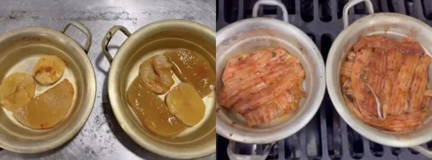

"이게 1인분이야 4인분이야?"…제주 갈치조림 4인분 양에 '시끌' : 네이트 뉴스
작성자 A씨가 주문한 양은냄비에 담긴 갈치조림 4인분과 돔베고기, 계란찜.
작성자 A씨는 가족과 함께 갈치조림 4인분(7만2000원)에 돔베고기와 계란찜을 추가해 약 9만원을 결제했다고 밝혔다.
그는 식당 리뷰에 올라온 1인분 사진과 자신이 실제로 받은 4인분 사진을 함께 공개하며 "솔직히 4인분으로는 안 보였고 밥을 먹고 나서도 배가 고팠다"고 주장했다.
A씨가 식사 후 음식 양을 문의하자 가게 측은 "갈치조림 4인분 기준 갈치 22조각이 정량"이라며 정상적으로 제공했다고 설명했다.
하지만 A씨는 “사진에 있는 음식은 아예 손대지 않은 상태였다”며 자신이 받은 양이 가게 측 설명과 다르게 느껴졌다고 반박했다.
논란이 커지자 가게 측도 해명에 나섰다.
가게 측은 하루 뒤인 8일 SNS에 입장문을 올리고 "모든 음식은 매장에서 정해놓은 기준에 따라 정량으로 제공한다"며
"사진은 음식이 담긴 위치와 형태, 촬영 각도에 따라 양이 다르게 보일 수 있다”고 설명했다.
또 "갈치와 돔베고기는 생선의 크기와 부위에 따라 조각 크기가 다를 수 있다"며 특정 손님에게만 양을 적게 제공한 사실은 없다고 강조했다.

식당 측이 공개한 갈치조림 1인분과 4인분의 모습. 1인분에는 감자 2조각, 무 1조각, 갈치 7조각이 담겼다.
4인분에는감자 2조각, 무 2조각, 갈치 22조각이 담겼다.
식당 측은 당시 다른 고객에게 제공된 동일 메뉴와 폐쇄회로(CC)TV 화면을 공개한 데 이어,
1인분과 4인분 갈치조림을 각각 직접 조리하는 영상도 올렸다.
공개된 조리 영상에 따르면 1인분에는 감자 2조각과 무 1조각, 갈치 7조각이 담겼다.
반면 4인분에는 감자 2조각, 무 2조각, 갈치 22조각이 제공됐다.
4인분이지만 감자와 무의 양은 1인분과 큰 차이가 없었고,
갈치 역시 1인분(7조각)의 4배인 28조각이 아닌 22조각으로, 약 3.1배에 그쳤다.
갈치는 비교적 얇고 작은 조각 여러 개가 겹겹이 담긴 모습이었다.
이 때문에 해명 영상이 공개된 뒤에도 온라인에서는 가게 측의 ‘정량 기준’을 이해하기 어렵다는 반응이 이어졌다.
7의 4배는 28이고 1의 4배는 4인데...?
이런저런 이유로 제주도 안간지 10년이 넘었음 해외가는게 낫다